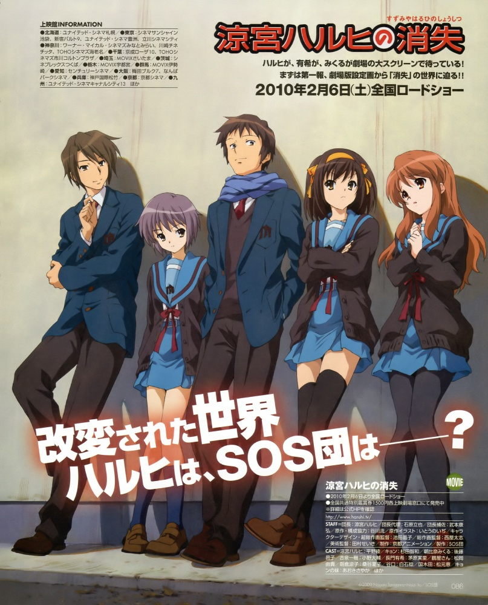
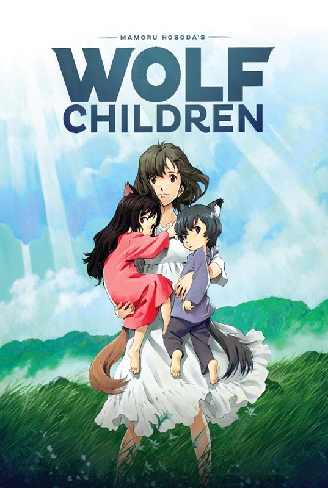
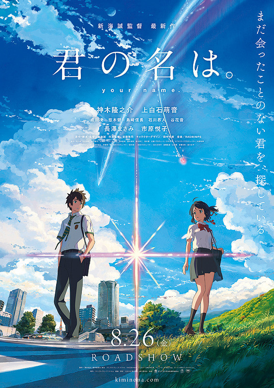

The Disappearance of Haruhi Suzumiya
Tatsuya Ishihara, Yasuhiro Takemoto

The Disappearance of Haruhi Suzumiya (涼宮ハルヒの消失 Suzumiya Haruhi no Shōshitsu) is a 2010 Japanese animated film based on the fourth Haruhi Suzumiya light novel of the same name written by Nagaru Tanigawa. It is produced by Kyoto Animation, written by Fumihiko Shimo and directed by Tatsuya Ishihara and Yasuhiro Takemoto. It was released in Japanese theaters on February 6, 2010 and on DVD and Blu-ray Disc on December 18, 2010. The film has been licensed by Bandai Entertainment in North America and Manga Entertainment in the UK. With a length of 162 minutes, the film is the second-longest animated film ever made (only surpassed by Final Yamato).
Wolf Children
Mamoru Hosoda

Wolf Children (Japanese: おおかみこどもの雨と雪 Hepburn: Ōkami Kodomo no Ame to Yuki, lit. "Wolf Children Ame and Yuki") is a 2012 Japanese anime film directed and co-written by Mamoru Hosoda.[2][3] The film stars the voices of Aoi Miyazaki, Takao Osawa and Haru Kuroki. The story follows a young mother who is left to raise two half-human half-wolf children, Ame and Yuki, after their werewolf father dies.
Your Name
Makoto Shinkai

Your Name (Japanese: 君の名は。 Hepburn: Kimi no Na wa.) is a 2016 Japanese animated drama film written and directed by Makoto Shinkai and produced by CoMix Wave Films. The film was produced by Noritaka Kawaguchi and Genki Kawamura, with music composed by Radwimps. Based on Shinkai's novel of the same name published a month before the film's premiere, Your Name tells the story of a high school girl in rural Japan and a high school boy in Tokyo who swap bodies. The film stars the voices of Ryunosuke Kamiki, Mone Kamishiraishi, Masami Nagasawa and Etsuko Ichihara.